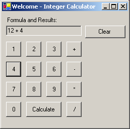

| Eiffel ENViSioN! | |
| Calc Sample | Load in Eiffel ENViSioN! |

RunningAfter launching the application, you will see a window displayed with an appearance similar to the one above. This is a really simple calculator that can take only two operands. So you should enter the first operand, then enter an operator, then the second operand. Click the "Calculate" button to generate the result. Under the HoodThe application uses two local external assemblies, math.dll and parserutils.dll. paserutils parses the command line entered, and checks if it is of the form operand1 operator operand2. math.dll calculates the actual result of the command line. Types from parser_utils.dll are prefixed with PARSER_ to prevent class names clashes. This sample uses the following classes:
Note: This sample is translated from the example located in the Tutorials\ResourcesAndLocalization\WorldCalc subdirectory of the .NET Framework SDK samples directory of Microsoft Visual Studio .NET. |
| © 2003-2004 Eiffel Software. All rights reserved. |